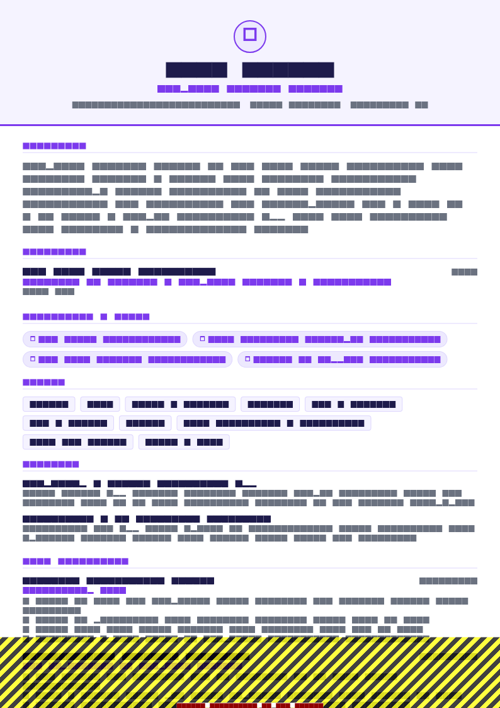

What internship recruiters are actually screening for
An internship is a supervised twelve weeks, not a hire. That changes what the resume has to prove.
A graduate recruiter is assessing capability. An internship recruiter is assessing four narrower things:
- Eligibility. Your year of study, expected graduation, and whether you return to education afterwards. This is a hard filter, so it goes near the top.
- Baseline competence in one relevant thing. Not a broad skill set — one demonstrable capability they can give you work in.
- Evidence you finish things. A completed project with a result beats an ambitious unfinished one every time.
- Whether supervising you will be a net positive. Communicated through how clearly you write, and through any evidence of working with other people.
Nothing on that list requires professional experience. All of it can come from coursework, projects, a summer job and a society role — which is exactly what you have.
Section order for an internship resume
- Contact — name, city, phone, university or professional email, LinkedIn and GitHub as plain text
- Summary — three lines, including your degree, year and what you are looking for
- Education — institution, degree, expected graduation, relevant modules
- Skills — grouped and specific
- Projects — two or three, coursework counts
- Work experience — anything paid, including retail and hospitality
- Activities and volunteering — where there is real responsibility
- Awards, certifications, languages — if genuinely relevant
Education sits above skills here, unlike a graduate resume, because eligibility is a screening question and your degree and year answer it in one line.
The summary
Vague
Enthusiastic and motivated student looking for an internship opportunity to gain practical exposure and enhance my skills in a professional environment.
Specific
Second-year computer science student (BSc, expected 2028) with a coursework project handling 50,000 records in Python and pandas. Comfortable with SQL and Git. Seeking a summer 2027 software engineering internship.
Three facts a recruiter needs immediately: what you are studying, when you graduate, and what you are applying for. Then one piece of concrete evidence. That is the whole job of this block.
Education and coursework
BSc Computer Science — University of Leeds · 2026 – expected 2029 · Current average 74%
Relevant modules: Algorithms and Data Structures, Databases, Software Engineering Practice, Statistics
Awards: Faculty Merit Scholarship (2026), Dean’s List year 1
Say expected before your graduation year so nobody has to work out whether you have finished. List modules only where they map to the role — four is plenty, and a full transcript reads as filler. Include your running average or year-one result if it is strong; leave it off otherwise.
If you are applying to a scheme with a specific cohort requirement (“penultimate year students only”), state your year of study explicitly rather than making the recruiter subtract dates.
Projects, including coursework
Coursework absolutely counts — the trick is writing it as work rather than as an assignment. Nobody wants to read “Module CS2040 group project”. Give it a name, name the stack, and state the outcome.
Assignment framing
Second year database coursework: designed a database for a fictional library system using MySQL. Received 72%.
Work framing
Library Lending System — MySQL, Python: designed a normalised 9-table schema and a loan-tracking CLI handling 50,000 seeded records; added indexes after profiling, cutting the slowest report query from 4.2s to 0.3s.
Same project, same marks, entirely different signal. The second version tells a supervisor you understand normalisation, profiling and indexing — things they can actually give you work in.
What to include, in priority order: a personal project with real users, a substantial group project where you owned a specific component, a hackathon or competition entry with a placement, a strong individual coursework project. Two or three total, and say clearly what you did if it was a group effort.


Summer and term-time jobs
Any paid work is worth including, and the ones students dismiss are often the most useful. A summer in a warehouse or a term of shifts in a cafe demonstrates the single thing an internship supervisor worries about: whether you will turn up and do the job.
Barista & Shift Keyholder — Grind Coffee, Leeds · Jun 2026 – present (term-time, 16 hrs/week)
- Served 200+ customers per shift as one of two keyholders, cashing up a £2,400 till with no shortfalls across 8 months.
- Trained 3 new staff on the till and drinks spec, and wrote the one-page opening checklist now used on every early shift.
Two bullets is enough. Note the hours-per-week annotation — it tells a recruiter you have balanced work with study, which is a point in your favour rather than something to hide.
Societies and volunteering
Include roles with a budget, a team, an event or a measurable outcome. Skip passive membership.
- Events Officer, Computing Society (2026–27) — organised 6 technical talks with an average attendance of 70, up from 25 the previous year, by moving publicity to a two-week email and poster cycle.
- Volunteer coder, local charity — rebuilt a donations page in a weekend; online donations rose 40% over the following quarter.
Skills
Grouped, specific, honest. At internship level, an over-long skills list is conspicuous: nobody in their second year of study has production experience in fourteen technologies, and claiming it invites the one question you cannot answer.
- Languages: Python, Java, SQL, JavaScript
- Tools: Git, GitHub Actions, Linux command line, VS Code, Jupyter
- Data: pandas, NumPy, matplotlib, PostgreSQL
- Currently learning: React, Docker
The “currently learning” line does real work at this stage. It is honest, it shows initiative, and it gives an interviewer a friendly question to open with. Field-by-field lists in resume skills.
First year versus penultimate year
| First year | Penultimate / final year | |
|---|---|---|
| What you lead with | School results, one project, initiative | Two or three substantial projects, prior internship if any |
| Education detail | Include strong school results; modules in progress | Drop school results; list relevant university modules |
| Projects expected | One is enough if it is finished | Two or three, at least one substantial |
| Skills depth | Fundamentals plus what you are learning | Working competence in the role's core stack |
| Realistic targets | Insight schemes, spring weeks, first-year programmes, smaller employers | Full summer internships, structured placement years |
First-year students routinely assume they are not eligible for anything. Many large employers run first-year specific insight programmes and spring weeks precisely to build a pipeline, and those are considerably less competitive than the penultimate-year internships they feed into.
Applying: timing, and the cover letter
Timing beats polish. Large employers in finance, consulting, law and technology commonly open summer internship applications 9 to 12 months ahead, and many close when they have filled the cohort rather than on the published deadline. A good resume submitted in week one outperforms an excellent one submitted in month four.
Have a version ready before term starts, then tailor per application.
Write the cover letter. It matters more here than at any later career stage, because your resume is thin by definition and the letter is the only place to show motivation. Three short paragraphs: why this employer specifically, the single most relevant thing you have done and what it demonstrates, and what you want to learn in twelve weeks. Templates and worked examples in cover letter examples.
Structured screening questions — eligibility, year of study, work authorisation, availability dates — are where most genuine automatic rejections occur. A perfect resume attached to a carelessly answered form goes nowhere. Give the form the same care as the document.
Mistakes that get students filtered out
Internship applications are reviewed in volume and against a deadline, which means small friction costs you more here than it would later in your career. The recurring ones:
- Hiding the graduation year. If a reviewer has to subtract dates to work out whether you are eligible, you are relying on their patience. Put it in the education line and the summary.
- Describing coursework by module code. “CS2040 group project” means nothing outside your department. Give the project a name and an outcome.
- Claiming a group project as solo work. Interviewers probe project detail precisely because there is less of it to probe. Name your component and you can answer confidently.
- Padding the skills list. Fourteen technologies on a second-year resume invites the one question you cannot answer. List what you can defend and label the rest as in progress.
- A design-heavy template. Two columns and graphics are the most common cause of scrambled parsing, and large employers run some of the strictest portals you will encounter.
- Leaving out the part-time job. It is proof you have held down paid work alongside study, which is exactly the reliability signal a supervisor wants.
- Applying only to the famous names. Mid-sized employers run internships with less competition, more responsibility and often a better reference at the end.
One more that is worth stating separately: a resume you have not read aloud. At internship stage the writing itself is evidence — a supervisor is deciding whether communicating with you will be easy. Read it out once and fix anything you stumble over.
Templates

Early Student resume template
Early Student is designed for exactly this stage: limited history presented without looking sparse, education and projects positioned first, and comfortable on a single page. ATS 84.
Use this template in NextCV| Template | ATS score | Price | Best for |
|---|---|---|---|
| Campus Placement | 94 | Free | Penultimate and final year students, campus schemes |
| Early Student | 84 | Premium | First and second year students with limited history |
| ATS Pro | 98 | Free | Large employer portals where parsing safety matters most |
| Leadership & Involvement | 85 | Premium | Students whose strongest evidence is society leadership |
Checklist
- One page, single column, text-based PDF
- Expected graduation year and current year of study stated clearly
- Summary names the specific internship season you are applying for
- Two or three projects, coursework reframed as work
- Your own contribution named on any group project
- Paid work included, with volume or responsibility
- Society roles show a budget, team, event or outcome
- Skills list honest, with a “currently learning” line
- Cover letter written and tailored to the employer
- Application submitted in the first two weeks the scheme is open
Frequently asked questions
What should be on an internship resume?
Contact details, a short summary, skills, education with relevant coursework, two or three projects, any work experience including part-time jobs, and society or volunteering roles that carry responsibility. One page.
The section order matters more than at any other career stage: education and projects go above employment, because that is where your evidence is.
How do I write an internship resume with no experience?
Use coursework and projects as your experience. A group assignment where you owned a component, a lab report with a real method, a hackathon entry, a society event you ran — all of these can be written with the same structure as a job: what you did, at what scale, and what the result was.
Internship recruiters know you have no professional history. They are looking for evidence you can finish things and be supervised productively.
Should an internship resume be one page?
One page, always. At this stage a second page is read as padding, and internship applications are reviewed in very high volume against a deadline.
If you are struggling to fill the page, add a project or expand your coursework rather than increasing font size and margins.
Do I put my expected graduation date on an internship resume?
Yes, and make it prominent. Internship eligibility usually depends on your year of study and whether you return to education afterwards, so a recruiter needs it immediately.
Write it as “BSc Computer Science, University of Leeds, expected 2028” and add your current year of study if the posting asks for a specific cohort.
Do I need a cover letter for an internship?
Send one whenever the form allows it. At internship level a cover letter carries proportionally more weight than later in your career, because your resume is thin by definition and the letter is where you show motivation and fit.
Keep it to three short paragraphs: why this employer specifically, the single most relevant thing you have done, and what you want to learn.
When should I apply for summer internships?
Far earlier than most students expect. Large employers in finance, consulting, law and technology commonly open applications 9 to 12 months ahead and close when full rather than at the stated deadline.
Have a resume ready before the academic year starts, and apply in the first two weeks a scheme opens.
NextCV Editorial
NextCV is an AI resume builder by Empire Softtech. We publish the same guidance our in-app ATS analyser is built on — seven weighted sections, 29 templates scored from 72 to 98, and no formatting advice we would not follow ourselves.